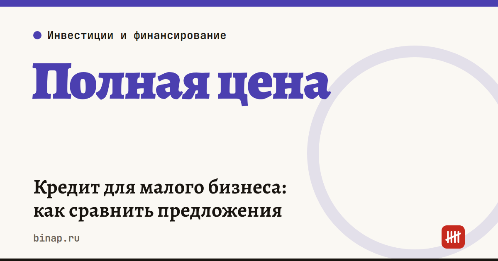

Кредит для малого бизнеса: как сравнить предложения

Сравнивайте кредиты не по ставке в рекламе, а по полной стоимости: ставка, разовые комиссии и обязательные страховки вместе. При ключевой ставке 14% разница в 1–2 пункта легко «съедается» комиссией за выдачу.
Коротко
- Банк России 23 октября 2026 года сохранил ключевую ставку 14%. Следующее заседание — 18 декабря 2026 года.
- Средняя ключевая ставка в 2027 году, по прогнозу ЦБ, — 12,5–13,5%. Инфляция на 19 октября — 6,8%, к концу года ЦБ ждёт 7,1–7,6%.
- Сравнивайте предложения по переплате за весь срок: платёж × число месяцев + разовые платежи − сумма кредита.
- Частые причины отказов малому бизнесу — непрозрачные финансы, нереалистичная сумма, высокая долговая нагрузка, кассовые разрывы и смешивание личных и бизнес-денег.
Что это значит для бизнеса
Ждать снижения до декабря не стоит. Ставка 14% держится, а снижение в 2027 году — только прогноз ЦБ. Платёж считайте по текущим условиям и оставляйте запас.
Ставка — не вся цена. В полную стоимость входят комиссия за выдачу, страховка и плата за обслуживание, если они обязательны.
Банк смотрит на порядок в деньгах. По данным «Клерка», со ссылкой на Екатерину Чигареву из Инго Банка, бизнесу отказывают из-за непрозрачных финансов, нереалистичного расчёта суммы, высокой долговой нагрузки, кассовых разрывов даже при прибыли, смешивания личных и корпоративных расходов и отсутствия управленческого учёта.
Как сравнить предложения: пример
Расчёт редакции: кредит 1 000 000 ₽ на 12 месяцев, аннуитетные платежи, условные предложения двух банков.
| Предложение А | Предложение Б | |
|---|---|---|
| Ставка | 22% | 20% |
| Комиссия за выдачу | нет | 1% — 10 000 ₽ |
| Платёж в месяц | 93 594 ₽ | 92 635 ₽ |
| Переплата за год | 123 133 ₽ | 121 614 ₽ (с комиссией) |
| Эффективная ставка | 22% | около 22% |
В рекламе разница — 2 пункта, а в рублях за год — около 1 500 ₽. Комиссия за выдачу почти полностью съела выгоду от низкой ставки. Если бы комиссия была 2%, дешевле оказалось бы предложение А.
Что сделать перед заявкой
- Возьмите предложения минимум трёх банков и выпишите по каждому: сумму, срок, ставку, все разовые и ежемесячные платежи, обязательные страховки.
- Посчитайте переплату по формуле выше и сравнивайте только её.
- Наведите порядок: разведите личные и бизнес-расходы по разным счетам, составьте простой отчёт о движении денег за последние месяцы.
- Заложите в заявку реальную потребность, а не сумму «с запасом» — нереалистичная сумма сама по себе причина отказа.
- Проверьте счёт: если банк требует обороты через него, посчитайте и стоимость обслуживания — где открыть счёт ИП и почему подорожал расчётный счёт.
Что проверить в договоре
| Условие | Почему важно |
|---|---|
| Досрочное погашение | можно ли без штрафа и без согласия банка |
| Обязательные страховки | входят в полную стоимость, их тоже сравнивайте |
| Комиссии за обслуживание | ежемесячные платежи меняют итог сильнее ставки |
| Штрафы за просрочку | размер и с какого дня начисляются |
| Ковенанты | требования к оборотам, счёту, отчётности — за нарушение банк может поднять ставку |
| Порядок уведомлений | как банк сообщает об изменениях и как отвечаете вы |
Сложный договор можно предварительно разобрать с помощью нейросети — запрос есть в статье ИИ для малого бизнеса: 10 задач. Итог всё равно проверьте у юриста.
Риски
- Кредит под переменную ставку: при росте ключевой ставки растёт и платёж.
- Залог и поручительство собственника: при проблемах бизнеса отвечаете личным имуществом.
- Кредит на покрытие кассового разрыва без плана, откуда придут деньги, — это отложенная проблема, а не решение.
Та же логика сравнения по полной стоимости работает и для эквайринга — разбор в статье эквайринг для ИП.
Частые вопросы
Какая сейчас ключевая ставка? 14% годовых — 23 октября 2026 года ЦБ её сохранил. Следующее заседание — 18 декабря 2026 года.
Почему малому бизнесу отказывают в кредите? Чаще всего из-за непрозрачных финансов, нереалистичной суммы, высокой долговой нагрузки, кассовых разрывов и смешивания личных и корпоративных расходов.
Как сравнить два кредита? Посчитайте переплату с учётом всех комиссий и страховок: ежемесячный платёж × срок + разовые платежи − сумма кредита.